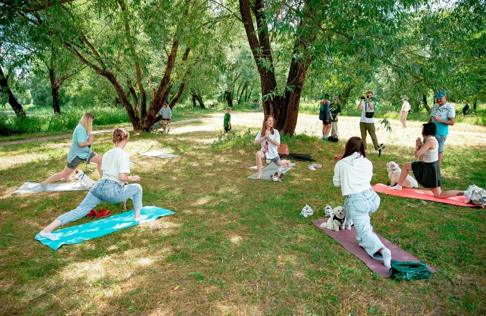

Йога критического выравнивания - авторский метод, разработанный голландским мастером Хертом ван Льюэном. Его вдохновляло наблюдение за пожилими людьми, которые не могли справиться с базовыми задачами организма: повернуться, наклониться и т.п.
Главная задача метода - работа с позвоночником: возвращение былой подвижности и укрепление глубоких пастуральных мыщц спины. Метод строится на 4-ех шагах: расслабление, движение, координация, сила.
Елена - большой профессионал своего дела, когда-то она сама мучилась с грыжами, протрузиями и постоянной болью в спине. Но в один прекрасный момент на просторах интернета она наткнулась на данный метод, он сразу ее затянул. Елена решила пройти специальное обучение у Ольги Крикуновой, далее съездила на несколько ретритов, во главе которых был основатель метода - Херт ван Льюэн.

Моя задача - познакомить людей с этим прекрасным методом, а влюбяться они в него самостоятельно
Студия "Зебра" расположена в районе Южный, на улице Бульвар Гусева 46.
На занятие приходим в комфортной для себя одежде, при желании можно будет переодеться
Стоимость группового занятия - 500 руб/час(максимальное кол-во человек 7)
Стоимость индивидуального занятия - 1500 руб/час